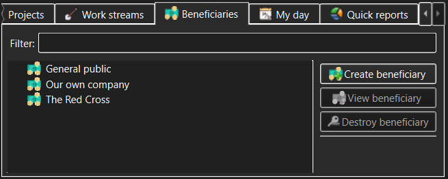

Beneficiaries view
The Beneficiaries view allows management of Beneficiaries (subject to access
permissions granted after login).

The controls in the Beneficiaries view allow the user to access:
- Beneficiaries list - this displays the list of
available Beneficiaries. All Beneficiaries are always visible to all
users.
- Filter - type anything here to narrow the set of
displayed Beneficiaries or to quickly find a specific Beneficiary. The
filter match can appear anywhere within the Beneficiary name.
- Create beneficiary - use this button to create a new
Beneficiary.
This will only be permitted to someone with Administrator or Manage
Beneficiaries capability and will be disallowed in a read-only workspace.
- View/Modify beneficiary - use this button to view or modify
the Beneficiary currently selected in the Beneficiaries list. The meaning of this
button (view or modify) will be determined by whether the current user has
logged in with Administrator or Manage Beneficiaries capability and whether or not
the workspace is read-only.
- Destroy beneficiary - use this button to permanently destroy
the Beneficiary currently selected in the Beneficiaries list. You will be
asked to confirm the destruction, as this is a dangerous operation. Although the Activities
assigned to the Projects and Work Streams associated with the Beneficiary remain intact, the historical
perspective will still be altered as these Activities will no longer be
attributed to their respective Beneficiary. The destroy confirmation
dialog that pops up will show just how much the recorded work history will be
impacted.
As well as action buttons, the Beneficiaries list allows invoking the same
actions (create, modify or destroy Beneficiary) via the context menus that pop
up when the Work Streams list items are right-clicked.
See also:
Create/Modify Beneficiary dialog,
Destroy
Beneficiary dialog